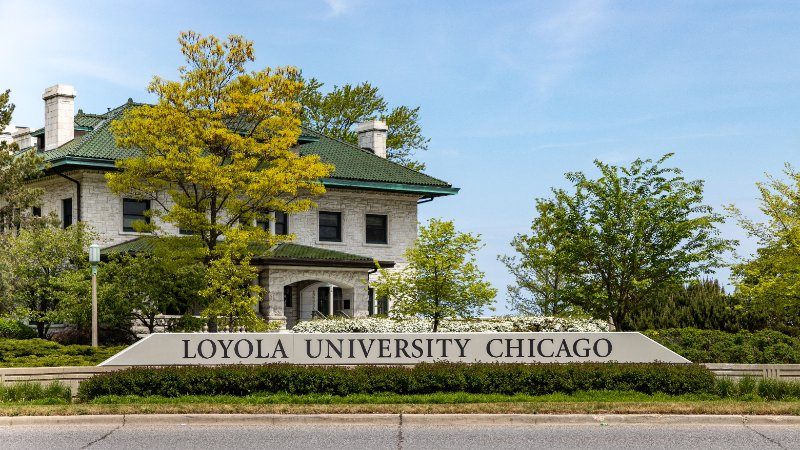

![NTK]()

Her Friends Picked the Lock While Men Blocked the Door
A 21-year-old woman went to a party at the Alpha Epsilon Pi house, 5625 S. University Ave., danced, had some drinks, and around 2 a.m. Sunday began feeling unwell, according to a Chicago police report obtained by the Chicago Sun-Times (WBEZ Chicago). Two friends told police they found the bathroom door guarded by up to five men who were "cheering and appearing to encourage the activity inside." The men first told the friends the woman was not in there. One man grabbed a friend by the hair while the other friend picked the lock (The Independent).
Inside, the woman was "not fully conscious," and she and the man were both partly undressed. When a friend told him to get off her, he answered that everything was "cool." Outside, he told the group they had "identified the wrong person," pointed them down the street, and ran. One friend chased him until she ran into a university police officer. The woman went to the hospital.
The friend later told the Sun-Times she was frustrated by how long it took to administer a rape kit, and that strangers were already sending her "really gross messages" because her name had circulated. The woman who reported the assault does not attend the university.
The University Named a Suspect It Could Not Name
By Tuesday, the university's Department of Safety & Security said it had identified a person of interest through witness statements, university cameras and license plate readers, and had passed all of it to Chicago police (CBS News). The man is not a student, is barred from campus, and has not been charged or named. No one has been arrested.
The alert landed hours after The Chicago Maroon, the student paper, described a TikTok video that appears to show a man matching the suspect's description. The fraternity chapter said on Instagram that no one affiliated with it was "involved or complicit." The chapter has been told to hold no events while the investigation continues (ABC News).
Notice who the university's statements keep describing: a suspect and a victim who both fall outside its enrollment. The New York Times framed the case that way too, noting neither was a student, even as the campus came under scrutiny (The New York Times).
Cornell Set the Frame, and Cornell Is Still Moving
The scrutiny arrives because of Ithaca. A Jane Doe lawsuit filed last month alleges seven members of the Chi Phi fraternity drugged and gang-raped her in October 2024. None of the men has been criminally charged, and all deny wrongdoing (The Independent). The case split cleanly. Students published essays and used #IAmJaneDoe, while a lawyer for one of the accused, Andrew T. Miltenberg, warned that an accusation "amplified often enough, can harden into a verdict before the evidence is ever tested." The Times also reported that records show a murkier picture: Doe texted one man that "nothing illegal" happened, then told police she was raped "with 100 percent confidence" (The New York Times).
Institutions have started to act. Gov. Kathy Hochul handed the investigation to Attorney General Letitia James, who had posted her support for Doe days earlier. Cornell banned fraternity parties for the rest of the year and appointed former Deputy Attorney General Sally Yates to lead an inquiry (The Independent).
Researchers have studied this setting for years. A 2006 study by Armstrong, Hamilton and Sweeney found that fraternity party culture, heavy drinking plus expectations that women defer to men, produces exactly this vulnerability (Wikipedia). What no study predicted is the detail from Hyde Park: the bystanders were not passive.
The next two weeks will test whether Chicago's paperwork can carry a case that the campus conversation has already convicted.
Chicago Police Will Probably Charge the Person of Interest, and the Charge Will Test Whether the Cheering Counts
The university has already told the public its evidence is corroborated by witnesses, camera footage and license plate readers, and it has handed all of it to police. Cases built that way usually move quickly. The most likely outcome is an arrest and felony charge against the man within days, probably framed around the victim's incapacity, since the police report describes her as "not fully conscious." A prosecutor does not have to prove she said no to a woman who could not say anything.
The harder question is the group outside the door. Illinois law allows accountability charges against people who help or encourage a crime, and the report puts up to five men at the bathroom, cheering and blocking two friends. Prosecutors will almost certainly interview them, because their statements decide whether anyone else is exposed. Expect the men to describe a man alone in a bathroom and a misunderstanding at the door, since their own cheering is the evidence against them. Charges against the bystanders are less likely than charges against the suspect, but the fact that they are being weighed at all is the new part.
Alpha Epsilon Pi's Chapter Will Lose Its Charter or Its Campus Standing
The chapter has told the public no one affiliated with it was "involved or complicit," and its national headquarters has frozen its events. That sequence has a recognizable ending. Once witnesses say who was standing at that door, the national organization faces a choice between defending a chapter and protecting its own insurance and brand. The most likely outcome is suspension of the chapter within weeks, followed by a review that ends in closure. Nationals have almost always cut loose the house rather than the principle.
The University of Chicago holds a weaker hand than it appears. Its statements stress that the suspect and victim are outsiders, which protects its enrollment figures but not its relationship to a house across from the Main Quad. The Chicago Maroon, which found the TikTok video before the administration spoke, will keep reporting, and so will the Sun-Times, which already holds the police report and has a source willing to talk. Every new detail they publish pushes the university toward a Cornell-style step, most likely a restriction on fraternity events near campus.
Cornell's Ban Becomes the Template, and Sally Yates Becomes the Audience
Cornell's ban on fraternity parties is the template other schools will be asked to match, and Chicago is the first test of that pressure. Within two weeks, expect student groups and local officials to demand equivalent restrictions from the University of Chicago and from other schools with houses near their quads. Administrators like the ban because it costs one semester of parties and answers a headline.
The winner is whoever can say they acted first. The loser is any president who waits for a charge before moving. Yates's inquiry will not report in this window, but its existence changes behavior now: no university wants to be the cautionary example in her final document.
Two doors opened this week that were not open a month ago, and one of them leads somewhere better.
A Prosecutor Can Now Build a Bystander Case Out of a Source the Defense Cannot Cross-Examine
Illinois law lets prosecutors charge people who help or encourage a crime. What changed is the evidence. The university says it matched its suspect through cameras and license plate readers, and a student paper found the TikTok video before any official did. Three records now exist that were not produced for a courtroom: university footage, the video, and the friends' accounts of who stood at the door. A prosecutor weighing accountability charges against up to five men does not need a confession. She can compare where each man appears on camera with what he tells police, and the men's likeliest story, a misunderstanding at the door, either survives the footage or does not. Last month no one at that party knew the university's cameras had been rolling. Now a prosecutor has a way to separate a bystander from a participant without relying on anyone's memory of a loud room.
If Chicago Charges Anyone for the Cheering, Every Chapter Near a Quad Has a Liability Problem
That path leads into a second room. A charge against a single bystander would change what chapters and their national offices owe each other. Fraternity nationals have long treated a rogue member as the member's problem. A bystander charge makes the cheering itself a legal event, and insurers write policies around legal events. Alpha Epsilon Pi's national headquarters already froze the chapter's programming. If one man is charged for standing at that door, the next question lands on every national office: who counts as encouraging? Expect risk managers, not deans, to write the first new rules, because a premium increase moves faster than a task force. Cornell's party ban gave schools a cheap answer. A bystander charge would take that answer away, since a ban on parties does nothing about what happens at the one that still occurs.
The Friends Who Picked the Lock Give Schools a Training Model They Never Had to Invent
One door leads somewhere better. Two women walked into a hostile doorway, one of them hauled by the hair, while a third picked a lock. Bystander intervention programs have taught that move for years. Until now they rested on survey data and role-play. The Hyde Park report puts a documented, successful intervention on record, with the cost spelled out: they were blocked, lied to, and assaulted, and they kept going. Cornell has just appointed Sally Yates to lead an inquiry, which gives her a rare chance to ask schools to build on a case where the intervention worked rather than only a catalog of where it failed. A prevention program can now point to a real night, a real lock and real women, and show students what the first push looks like. It does not fix the room where the men cheered. It proves someone in the building can refuse to.
The most useful lie in this story is the one that makes it somebody else's problem.
"It Wasn't a UChicago Problem": The Outsider Alibi
The claim runs through the university's own alerts and, by extension, the coverage that repeats them. The suspect is not a student. The victim is not a student. The campus, in the telling, was a backdrop. The New York Times gave it the loudest placement, setting "not students" in the subhead, ahead of the scrutiny and the outrage (The New York Times).
The belief is easy to understand. Parents paying tuition want to hear that the danger came from outside the gates. Students want the Main Quad to stay safe. A reader who has watched institutions manage crises for years may even feel relief that this one seems to be someone else's mess.
The statement answers a fear, and it also protects something specific. A university's reputation, enrollment numbers and Title IX exposure all depend on whether a case counts as "ours." Every sentence that begins with who was not enrolled moves the case out of the category that triggers obligations. The wording is accurate in its details, and that is what makes it work. Nobody has to invent anything when a true fact can be put in the wrong place.
Put it back where it belongs. The assault happened in a house across the street from the Main Quad. The university's Department of Safety & Security was the body that matched the suspect, using its own cameras and license plate readers, and that capacity exists because the university treats those blocks as its responsibility. The university police officer who took the complaint patrolled that street for the same reason. A school that polices the block is a school that owns the block, and it cannot claim the address only when the cameras help.
Enrollment status also answers the wrong question. Nothing in the police report suggests the men cheering at the bathroom door were outsiders, and nobody has said who they are. The university has announced nothing about who held that party, who let guests in, or what the chapter's rules said about a locked door. Until it does, "not a student" covers one man and leaves a house full of unanswered questions untouched.
Colleges have used this move before. Penn State's administrators spent years calling the Sandusky abuse a matter involving a retired coach rather than a university program, and the Freeh report later said otherwise. The pattern holds because the technical truth is always available and always cheaper than the full one.
The tell is in what the alerts leave out. Neither the chapter nor the university has addressed the men at the door. A statement that says "not ours" about the suspect and nothing about the crowd has chosen which part of the night to describe.